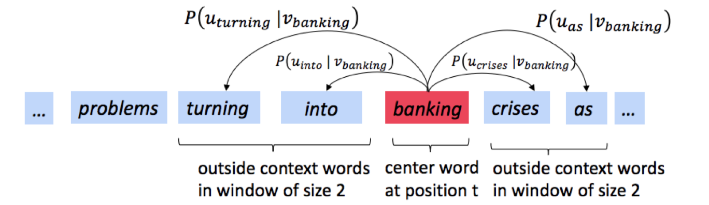

This post will introduce and explain the intuition and math behind word2vec and GloVe. At the end, the reader will be able to explain these algorithms in lehman terms, and have a solid understanding of the math involved. Only very basic math concepts are necessary for the understanding of this post.
The original paper presenting word2vec can be found here.
Word2vec tries to find vector representations of words by predicting the words that appear in its context. This results in interesting word similarities:
We’re going to train a simple neural network with a single hidden layer to perform a certain task, but then we’re not actually going to use that neural network for the task we trained it on! Instead, the goal is actually just to learn the weights of the hidden layer–we’ll see that these weights are actually the “word vectors” that we’re trying to learn.
It does this by altering vector representations of words, such that contextual words in a window around a target word are close in the embedding space. The objective is to simultaneously (1) maximize the probability that an observed word appears in the context of it's target word and (2) minimize the probability that a randomly selected word from the vocabulary appears as a context word for the given target word.
An example of the window, target word and context words is shown below.
Corpus: The dog is very big and like treats
Target Word: "very"
Context words: "is", "big"
The skip-gram model is an architecture for learning word embeddings that was first presented in this paper. The idea is that we take a word in the vocabulary as the "target" or "center" word, and predict the words around it. 'Around' is determined by a pre-specified window size, $m$.
More formally, we have an input sequence of words, $w_1, w_2,.., w_T$, each which has a context window around them, $-m \le j \le m$. For each word in the context window, $w_{t+j}$, we calculate the probability that it appears in the context of target word $w_t$. The probability of word $w_{t+j}$ appearing in the context of the given target word $w_t$ can be expressed as $p(w_{t+j} | w_t)$.
The mathematical way of representing this is shown below. Breaking down this equation into its constituent parts and referencing their explanation above will help to understand it.
The skip-gram model is different from other approaches to word embeddings, such as continuous bag-of-words, which is also presented in the original skip-gram paper. The continuous bag-of-words architecture attempts to predict the target word given its context.
PUT A VISUALIZATION OF A SENTENCE, THE TARGET WORD AND WINDOW
|  |
|---|
| Figure 1: Taken from Stanford's NLP course, shows the skip gram prediction of "banking" with window size 2. |
SGNS seeks to represent each word w ∈ $V_W$ and each context c ∈ VC as d-dimensional vectors w and ⃗c, such that words that are “similar” to each other will have similar vector representations. It does so by trying to maximize a function of the product w · ⃗c for (w, c) pairs that occur in D, and minimize it for negative examples: (w, cN ) pairs that do not necessarily occur in D. The negative examples are created by stochastically corrupting observed (w, c) pairs from D – hence the name “negative sampling”. For each observation of (w,c), SGNS draws k contexts from the empirical unigram distribution P (c) = #(c).
Before we start, recall that an objective or loss function, $J(\theta)$, is a way of determining the goodness of a model. We alter the parameters of this function, $\theta$, to find the best fit for the model. Here we make the ideas about target and context words discussed above more concrete. Note that the parameters of our model are the word embeddings (vectors) we want to find.
The probability, $p(w_{t+j} | w_t; \theta))$, can be expressed using the naive softmax function:
Where:
Here, $u_o$ is the "context" vector representation of word $o$ and $v_c$ is the "target" vector representation of word $c$. Having two representations simplifies the calculations, and we can always combine the two representations after.
Although we now have a way of quantifying the probability a word appears in the context of another, the $\sum_{w=1}^W e^{u_w^T v_c}$ term presents difficulty. It requires us to iterate over all words in the vocabulary and do some calculation. The computational complexity of this term is proportional to the size of the vocabulary, which can be massive, more than $10^6$. The authors introduce a clever way of dealing with this called negative sampling.
Negative sampling overcomes the need to iterate over all words in the vocabulary to compute the softmax by sub-sampling the vocabulary. We sample $k$ words and determine the probability that these words do not co-occur with the target word. The idea is to train binary logistic regressions for a true pair versus a couple of noise pairs. According to the paper, this is done because a good model should be able to differentiate between data and noise.
W=To incorporate negative sampling, the skip-gram objective function needs to be altered by replacing $p(w_{t+j} | w_t)$ with:
Where $\sigma(.)$ is the sigmoid function.
Thus the task is to distinguish the target word $w_t$ from draws from the noise distribution $P_n(w)$ using logistic regression, where there are $k$ negative samples for each data sample.
New Objective Function
This is too much, lets look each component of $J_t(\theta)$ and try to convince ourselves this makes sense.
The first part, $log(\sigma(u_o^Tv_c))$, can be interpreted as the log "probability" of the target and context words co-occurring. We want our model to find vector representations of $u_o$ and $v_c$ to maximize this probability. The word probability is used loosely here, and is only thrown around because the sigmoid function returns a number between 0 and 1.
The second part, $\sum_{i = 1}^{k}E_{j \sim P(w)} [log(\sigma(-u_j^T v_c))]$, is where the "sampling" in negative sampling happens. Let's break this up more to make it clearer. It'll come in handy to note that $\sigma(-x) = 1 - \sigma(x)$.
First, we can drop the $E_{j \sim P(w)}$ term, since we already know we will be sampling words from some distribution, $P(w)$
QUESTION - Does this term, $E_{j \sim P(w)}$ mean an expected value? So we multiply $log(\sigma(.))$ by $p(j)$?
Now this makes a bit more sense, we're taking the log of 1 minus the probability that the sampled word, $j$, appears in the context of the target word $c$. This is just log of the probability that $j$ does not appear in the context of the target word $c$. Since $j$ is a randomly drawn word out of ~$10^6$ words, there's a very small chance it appears in the context of $c$, so this probability should be high.
There is also a summation term here up to $k$ elements. All this is saying is that we're sampling $k$ words from $P(w)$.
Finally, we have to specify a distribution for negative sampling, $P(w) = U(w)^{3/4}/Z$. Here, $U(w)$ is the unigram distribution and is raised to the $\frac{3}{4}$th power to sample rarer words in the vocabulary. $Z$ is just a normalization term.
To summarize, this loss function is trying to maximize the probability that word $o$ appears in the context of word $c$, while minimizing the probability that a randomly selected word from the vocabulary appears in the context of word $c$. We use the gradient of this loss function to update the word vectors, $u_o$ and $v_c$ to get our word embeddings.
Summary of Word2Vec
Atom markdown docs.
Small review of GloVe and word2vec
Evaluating unsupervised word embeddings
Stanford NLP coursenotes on GloVe
Stanford NLP coursenotes on word2vec